Games With the Best Long-Term Value
Games that keep giving through replayability, mods, community, systems, or sheer amount of meaningful content.
Long-term value is not just hours per dollar. It is whether those hours stay interesting, whether the community adds life, and whether returning months later feels natural.
Mods, replays, builds, and platform availability keep Skyrim alive long after most single-player RPGs fade.
The combination of simulation, creativity, and modding gives city builders enormous replay value.
Every colony becomes a different disaster story. Mods expand it almost endlessly.
Few games have a stronger claim to infinite value. Building, survival, servers, and mods keep it open-ended.
Different classes, companions, moral routes, and co-op campaigns make repeat playthroughs feel meaningfully different.
A great value game is not one you force yourself to finish. It is one you keep finding reasons to reopen.